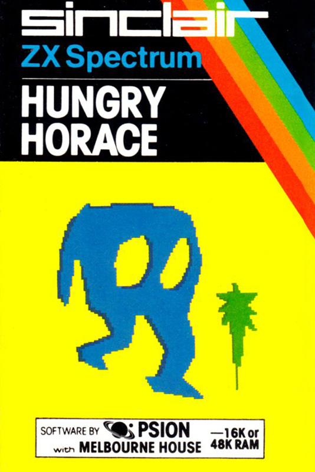
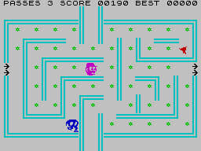

Hungry Horace


{kind=link}

| Publisher: | Psion |
| Price: | £5.95 |
| Year: | 1982 |
| Source: | CRASH, Issue 6 |

Hungry Horace never got a CRASH review, we do however have this short snippet from CRASH issue 6.
No need for intros here as every self-respecting Spectrum owner has heard of Horace (if not, why not?). This is an excellent variation which has stood the test of time well. I remember buying this one over a year ago and it still has appeal. Some details like the 'finishing' of the maze are a little bit primitive by today's standards, but this still outdoes many newer games. If anyone has not got Hungry Horace get it!
CP
Horace cannot be called a traditional Pacman game there are no ghosts for a start off, just park guards which multiply after a set time, The three mazes are very simple indeed, though quite well drawn. Power pills don't exist either, instead there is an emergency alarm bell. Ringing the bell will cause the guards to freak, allowing you to throw them out of the park. The characters are well drawn and move smoothly. Colour and sound are well used. Totally different from the arcade version.
MU